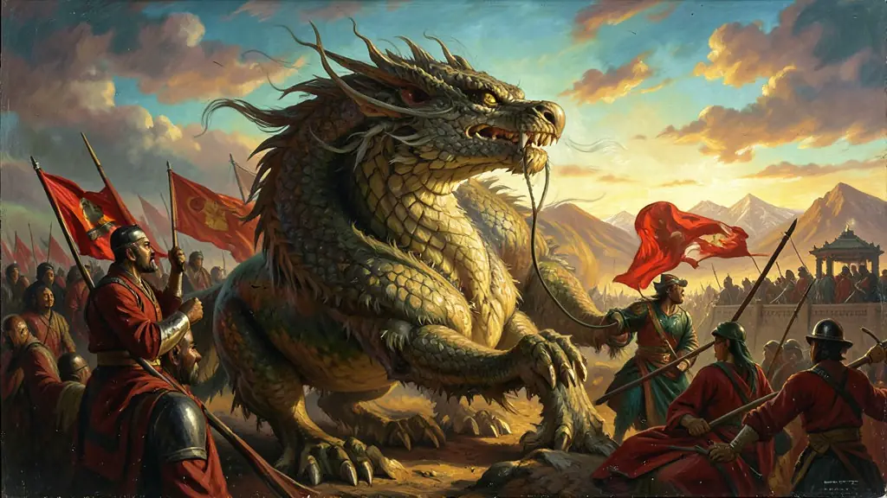
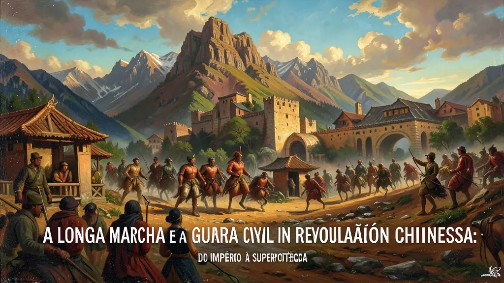
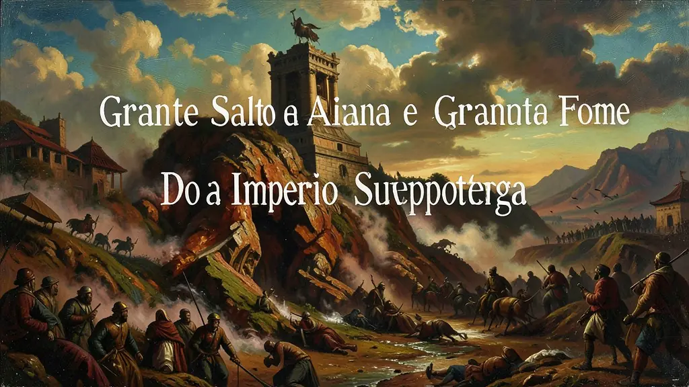

Capítulo 01
1. A Queda do Dragão e a República (1911)
A China era governada por imperadores há milênios. Sun Yat-sen liderou o levante que derrubou a dinastia Qing, mas a República era fraca e o país foi dominado por 'Senhores da Guerra' e potências estrangeiras. O Partido Comunista Chinês (PCC) surgiu como uma resposta nacionalista e social para expulsar os europeus e reorganizar a vida camponesa, que era quase medieval.

Capítulo 02
2. A Longa Marcha e a Guerra Civil
Cercados pelos exércitos nacionalistas, os comunistas de Mao fizeram uma retirada estratégica de 368 dias pelas montanhas e pântanos da China. Dos 100 mil que partiram, apenas 8 mil chegaram ao final. Essa jornada transformou Mao no líder supremo e provou que o exército comunista tinha a disciplina necessária para vencer. A guerra foi pausada para expulsar os japoneses, mas retomada após 1945.

Capítulo 03
3. Grande Salto Adiante e a Grande Fome
Mao queria passar a Inglaterra na produção de aço em 15 anos. Ele forçou milhões de camponeses a criarem siderúrgicas de fundo de quintal e a coletivizarem a terra. Os números de colheita eram falsificados pela propaganda, mas a realidade foi um caos administrativo que destruiu a agricultura, levando a um colapso alimentar que matou entre 20 e 40 milhões de pessoas.

Capítulo 04
4. Revolução Cultural: O Livro Vermelho
Mao convocou os jovens ('Guardas Vermelhos') para destruir os 'Quatro Velhos': velhos hábitos, velhas ideias, velha cultura e velhos costumes. Professores foram humilhados e museus destruídos. Mao usou o caos para limpar o Partido de seus rivais. Foi um período de obscurantismo onde a ideologia de Mao tornou-se uma religião estatal obrigatória na China.
Capítulo 05
5. Deng Xiaoping e o Milagre Chinês
Com Mao morto, Deng Xiaoping abandonou a ideologia pura. 'Ser rico é glorioso', dizia ele. Ele permitiu o lucro privado na agricultura e abriu cidades costeiras para fábricas estrangeiras (Nike, Apple, etc.). O resultado foi o maior crescimento econômico da história da humanidade, retirando 800 milhões de pessoas da miséria em 40 anos, sem abrir mão do controle total do Partido Comunista.
O transcorrer histórico que culminou na colossal 'Revolução Chinesa' sob a égide inconteste do Partido Comunista Chinês foi indissociável da fragilidade civilizatória e das agressões bélicas internacionais infligidas pela Era dos Tratados Desiguais. Com a caducidade letárgica das antigas monarquias da dinastia absolutista Qing, a liderança republicano-burguesa vacilante do Kuomintang e principalmente sob a perniciosa pilhagem das bestiais invasões do Exército Imperial Japonês nascente em 1930, propiciaram-se como terrenos propícios de humilhação ao ideário do patriotismo proletariado agrariano extremado ideologizado.
Um paradigma nevrálgico dessa gigantesca insurreição asiática fora protagonizado singularmente pela teoria autoral de Mao Zedong que reformulou a via da concepção ortodoxa. Mao diagnosticou radicalmente na massiva revolta camponesa do feudalismo a real mola principal – em oposição explícita do trabalhador siderúrgico capitalista do proletário urbano soviético e europeu clássico referenciado pelas teorizações industriais esquerdistas. A heróica Grande Marcha dos combatentes maoístas refugiou as raízes militares partidárias em bases fortificadas, alicerçando a adesão absoluta popular interiorizada.
Do ano decisivamente triunfante de constituição definitiva vermelha pelo líder supremo a partir 1949, passando pela funesta crise agropastoril e hiperinflacionária de famintas letalidades chamada O 'Grande Salto Adiante' pela planificação até às expurgatórias de aniquilações puristas violentas da infame enrubescida e anti-dissidente 'Revolução Cultural Proletária' nos idos dos anos 60 constituem o alicerce interpretativo do candidato. Uma colossal estrutura planificadora estatal que logrou e unificou e, simultaneamente, triturou direitos de forma contundente ao estabelecer fundacionalmente as raízes de aço da pátria sínica atual.
Fonte: MEISNER, Maurice. Mao's China and After: A History of the People's Republic. Free Press, 1999.
Atividades interativas
Questões para fixar
A abertura econômica da China na década de 1970, liderada por Deng Xiaoping, criou regiões específicas para atrair empresas estrangeiras e capital capitalista. Qual é o nome dessas regiões?
Diferente da revolução russa de 1917, qual foi o principal grupo social que serviu de base para a revolução comunista chinesa liderada por Mao Tsé-Tung?